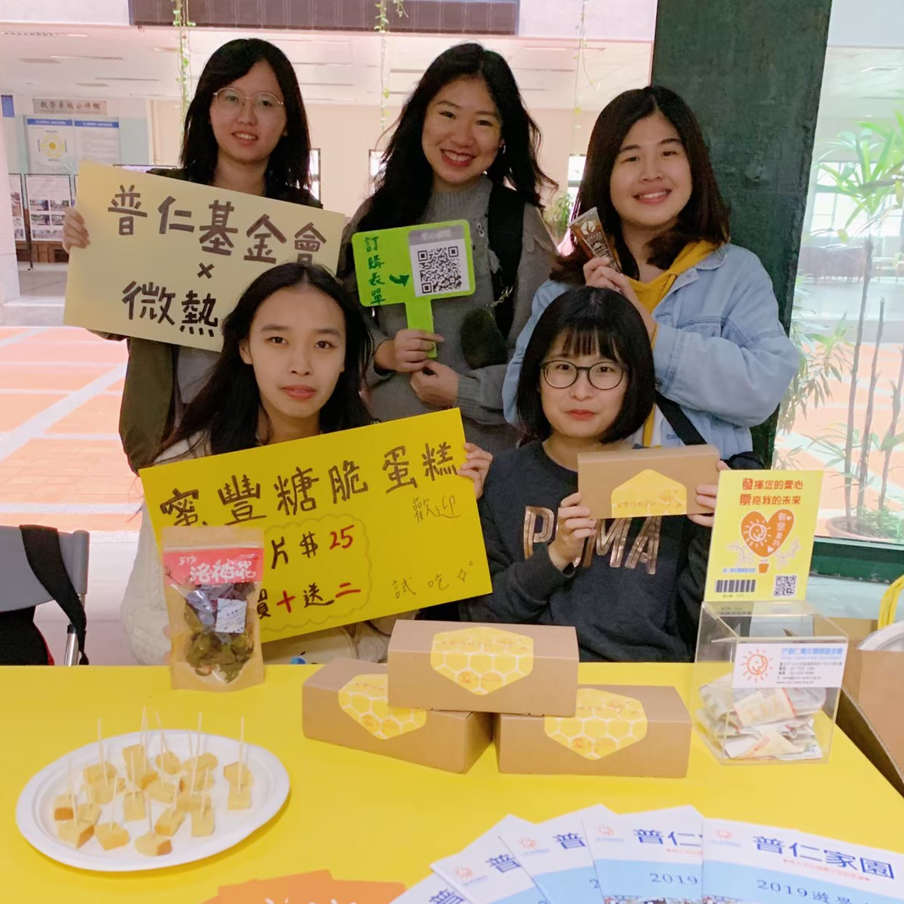
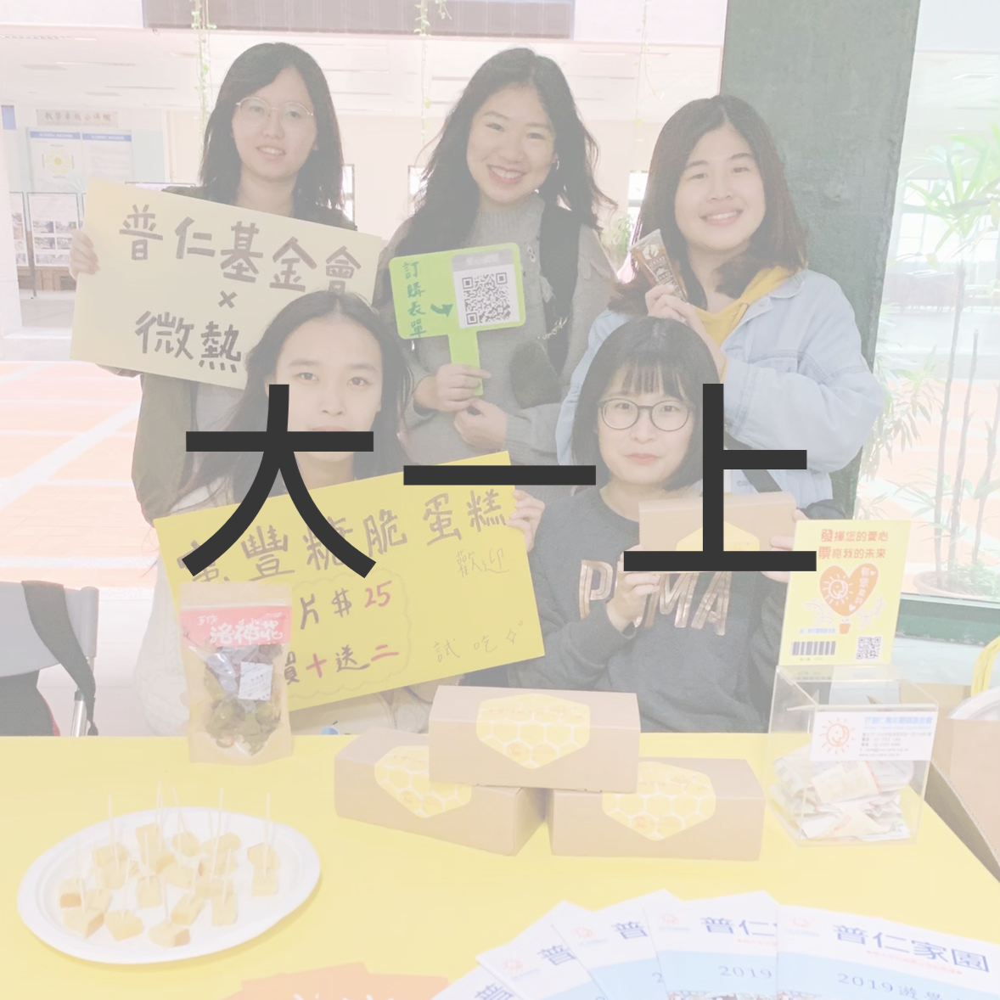

企業概論-蜜豐糖脆蛋糕


2019/9-2020/1
這是一門以「義賣」學習企業經營的課程，雖然是大一的魔王課程，但讓我在處理文書和上台報告都獲益良多，也了解真正的學用合一是什麼意思。
2019/7~8
高三畢業後的暑假，我到宏亞食品公司打工，這次的經驗打破我對生產線的印象，機器化程度其實不高，就是一條可調速輸送帶加上包裝機，其他內襯或乾燥劑都要人手動去放置，包裝機也時常出問題，要有人一直顧著，不然可能會把月餅壓壞，原來製作一盒月餅的人事成本蠻高的。這次的經驗讓我了解到賺錢是如此的不容易，也讓我更珍惜在校學習的時間，希望以此增進自己的實力，嘗試更多不同的工作。
2020/7~Now
大一下期末前，學姐推薦我可以去環工系應徵工讀生，於是我在暑假面試成功，開始校內工讀的生活。除了招待來賓，也會做一些文件的整理，我對excel的了解甚少，但系上許多資料都需要使用excel，在助教細心教導下，我對此軟體的使用越來越清楚，很開心能夠在工作中學到實用的技能。有時，我會作為校方和環工系上聯繫的人員，發現原來要申請一筆費用、或是購買一些系上消耗品，都要多次公文的往來才能拿到，深深了解到行政人員的辛苦。